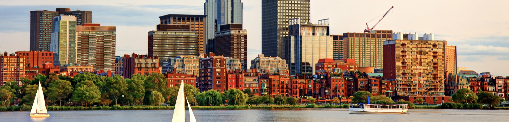

Hello, my name is Oliver Rayner.
I'm a student at MIT in the Aerospace Engineering and EECS (Electrical Engineering and Computer
Science) departments.
This is where I call home.

While trained as an Aerospace Engineer, I have a exceptionally large CS background -
I like making things.
As much as I enjoy exercising the creative side of my personality, I do enjoy physical activity.
I'm an avid rockclimber and runner. I spent six years of my life rowing; four with Pelham Community Rowing
Association (PCRA) and two with the MIT Lightweight Crew Team.
Oliver Rayner 2022
oliverr@mit.edu / +1 (914) 708 8835 / oliver.e.rayner@gmail.com